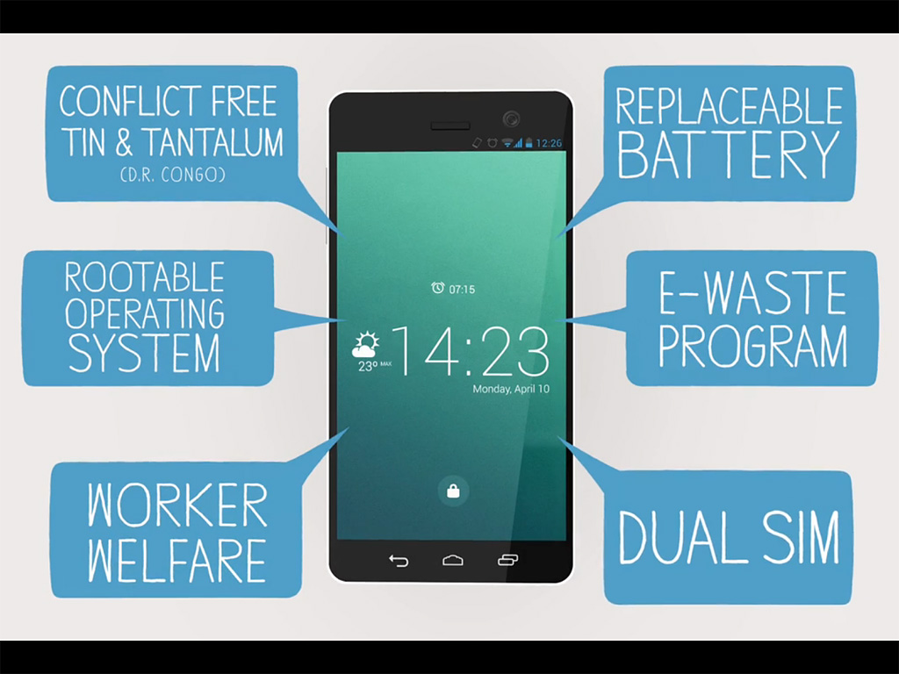

Consumo de tecnologías abiertas, y porque hacerlo
La soberanía tecnológica es una corriente social que postula la necesidad de empoderamiento colectivo en el ámbito de las nuevas tecnologías, resultando claves:
Una ciudadanía consciente y responsable en su uso y consumo.
La creación y uso de alternativas autogestionadas en, por ejemplo: las telecomunicaciones, la informática de usuario, el software para pymes, Internet, plataformas móviles y redes sociales.
(Wikipedia)
Características
¿Por qué ST? ¿Cómo apoyar la ST desde el consumo?
Ejemplos para un consumo basado en ST

Teléfonos diseñador a partir de valores sociales
fairphone.comCoop de servicios TIC
eticom.coop